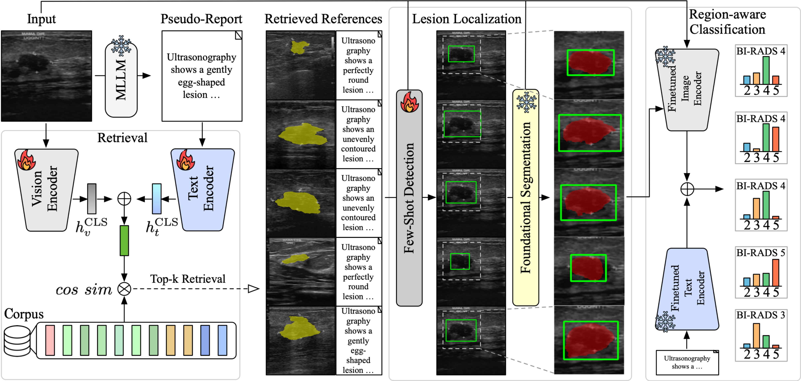
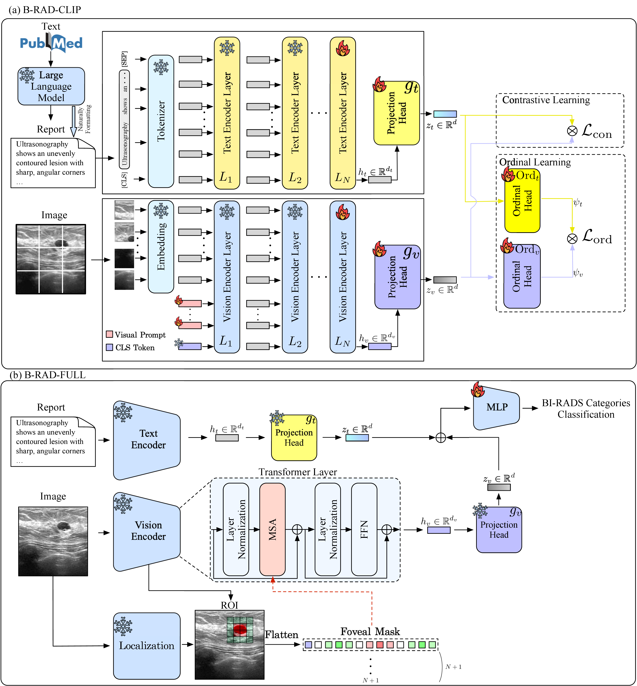
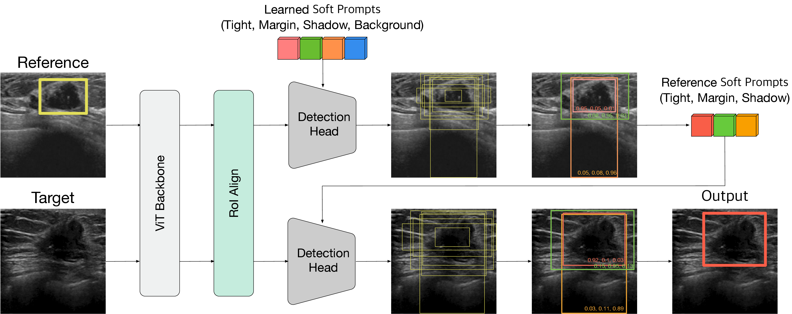
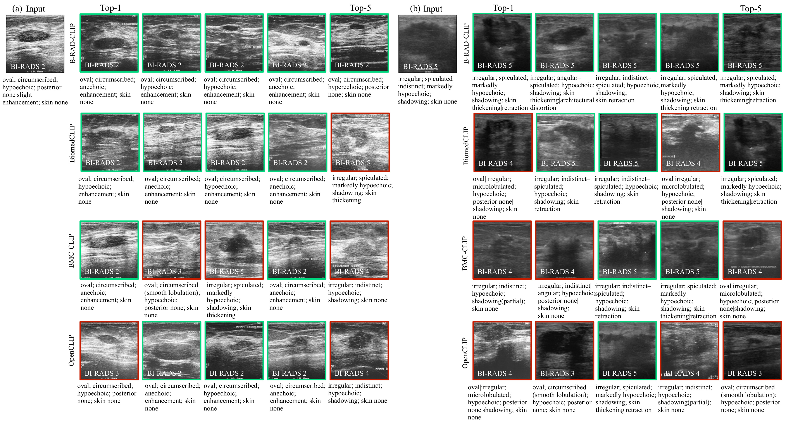
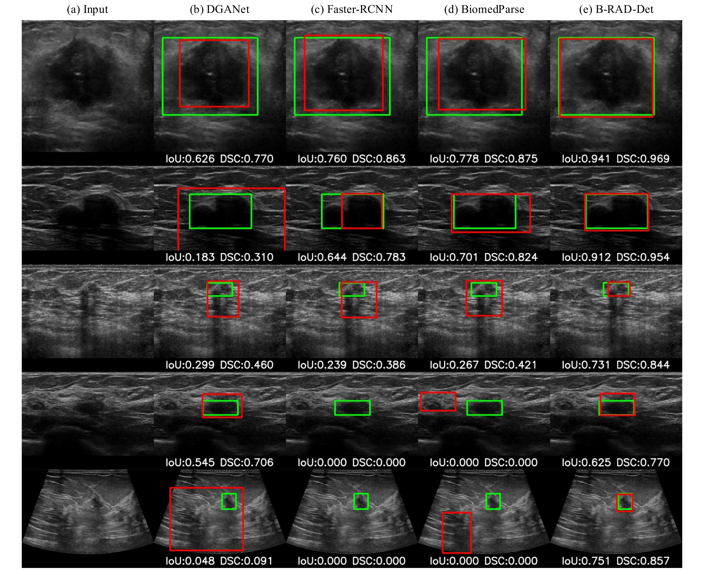
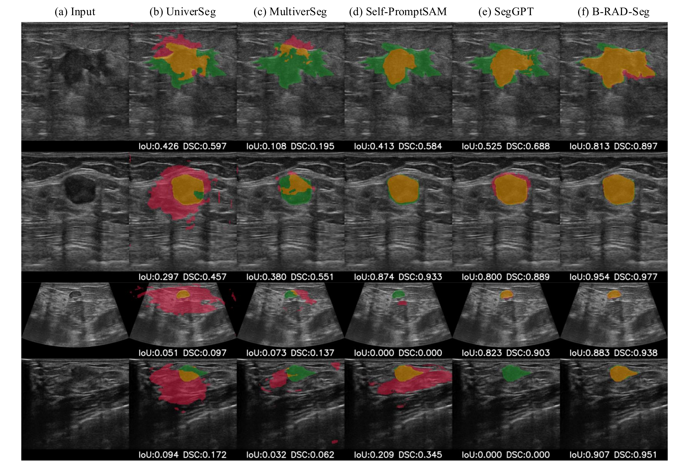
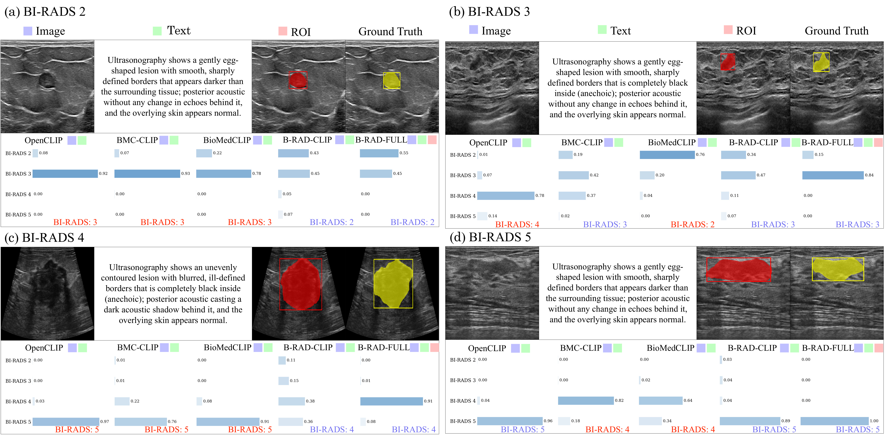
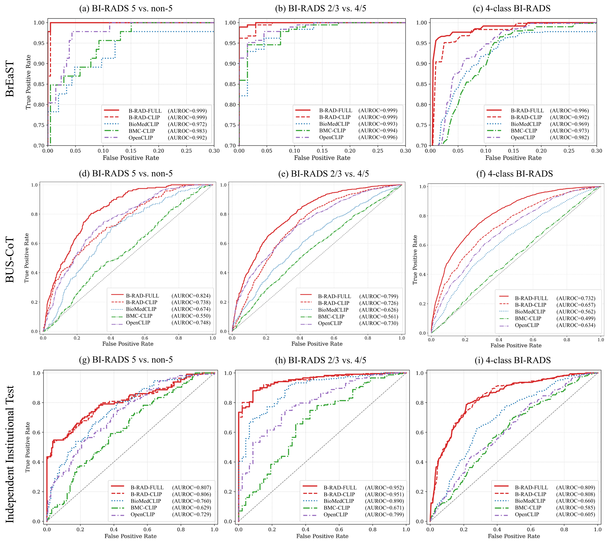
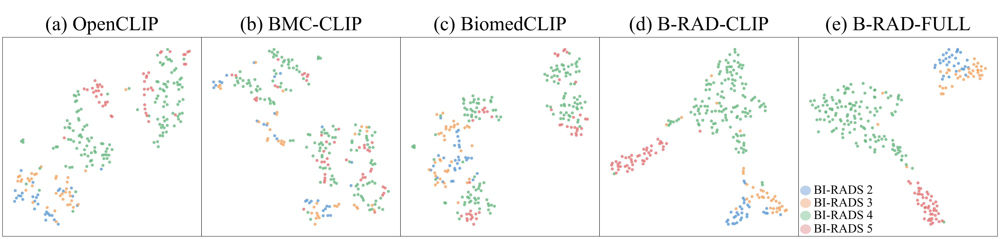
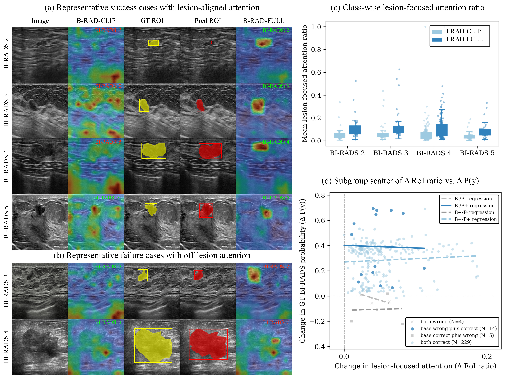

B-RAD reads like a radiologist: it retrieves BI-RADS-matched exemplars, localizes the lesion, and decides the category.
Breast ultrasound is central to breast cancer diagnosis but suffers from substantial inter-observer variability in Breast Imaging Reporting and Data System (BI-RADS) assessment, and existing deep learning models remain opaque. Multimodal large language models promise interpretable report-based reasoning, yet scarce paired image-report data yields weak visual-semantic alignment. We propose B-RAD, a BI-RADS-aware retrieval-augmented diagnosis framework that mirrors the radiologist workflow of retrieving exemplars, localizing lesions, and determining the BI-RADS category. Its retrieval module learns BI-RADS-aware alignment from unpaired data by jointly minimizing cross-modal mismatch and ordinal prediction error. Retrieved exemplars guide few-shot detection of the lesion together with its margin and posterior acoustic features, and the detected region prompts a segmentation model whose mask drives training-free foveal attention for classification. We validated B-RAD on eleven cohorts from seven countries totaling 8311 images, spanning internal validation and three external cohorts including an independent institutional cohort. The full pipeline reached a biopsy triage AUROC of 0.952 on that institutional cohort without fine-tuning, outperforming existing vision-language models. In a four-reader study, B-RAD assistance improved accuracy, raised inter-reader agreement from moderate to substantial, and reduced missed malignancies across all readers. These findings show that retrieval-augmented diagnosis can narrow the expertise gap and support accessible breast cancer screening in resource-limited settings.
A cognition-aligned pipeline that follows the radiologist's reading order: retrieve, localize, then classify.

B-RAD-CLIP aligns images and structured lexicon text with a contrastive loss plus an ordinal loss over BI-RADS categories, so similar-looking cases are also similar in category. It is trained without paired image–report data.
B-RAD-CLIPThe top-k retrieved references serve as support examples for few-shot detection of the lesion along with its margin and posterior acoustic features. The predicted box then prompts a segmentation foundation model.
B-RAD-Det · B-RAD-SegA training-free foveal attention mask built from the segmented ROI focuses the vision encoder on the lesion, and image, text, and ROI features are fused to predict BI-RADS 2–5.
B-RAD-FULL

B-RAD-FULL is the best model on every cohort, and the gap over off-the-shelf vision-language models widens on the independent hospital data.
| Model | Setting | Acc | F1 | AUROC [95% CI] | ||
|---|---|---|---|---|---|---|
| BI-RADS 5 vs others | Biopsy triage (2/3 vs 4/5) | 4-class weighted | ||||
| OpenCLIP | Img, Txt | 0.37 ± 0.03 | 0.41 ± 0.03 | 0.729 [0.667–0.787] | 0.799 [0.735–0.863] | 0.605 [0.568–0.644] |
| BiomedCLIP | Img, Txt | 0.33 ± 0.03 | 0.36 ± 0.03 | 0.760 [0.701–0.812] | 0.890 [0.840–0.934] | 0.660 [0.620–0.699] |
| BMC-CLIP | Img, Txt | 0.38 ± 0.03 | 0.30 ± 0.03 | 0.629 [0.566–0.694] | 0.671 [0.583–0.756] | 0.585 [0.528–0.638] |
| B-RAD-CLIP | Img, Txt | 0.63 ± 0.03 | 0.63 ± 0.03 | 0.806 [0.750–0.855] | 0.951 [0.922–0.973] | 0.808 [0.772–0.843] |
| B-RAD-FULL | Img, Txt, ROI | 0.63 ± 0.03 | 0.64 ± 0.03 | 0.807 [0.757–0.855] | 0.952 [0.925–0.973] | 0.809 [0.774–0.843] |
n = 289, BI-RADS 2–5, collected from routine diagnostic breast ultrasound at a tertiary referral hospital (83.7% BI-RADS 4–5). All models were trained only on public ID cohorts and evaluated without fine-tuning.
| Model | Setting | Acc | F1 | AUROC [95% CI] | ||
|---|---|---|---|---|---|---|
| BI-RADS 5 vs others | Biopsy triage (2/3 vs 4/5) | 4-class weighted | ||||
| OpenCLIP | Img, Txt | 0.29 ± 0.01 | 0.35 ± 0.01 | 0.748 [0.719–0.777] | 0.730 [0.711–0.748] | 0.634 [0.620–0.649] |
| BiomedCLIP | Img, Txt | 0.44 ± 0.01 | 0.45 ± 0.01 | 0.674 [0.640–0.706] | 0.626 [0.606–0.649] | 0.562 [0.544–0.579] |
| BMC-CLIP | Img, Txt | 0.20 ± 0.01 | 0.25 ± 0.01 | 0.550 [0.513–0.586] | 0.561 [0.541–0.582] | 0.499 [0.484–0.513] |
| B-RAD-CLIP | Img, Txt | 0.57 ± 0.01 | 0.56 ± 0.01 | 0.738 [0.706–0.768] | 0.726 [0.705–0.745] | 0.657 [0.640–0.673] |
| B-RAD-FULL | Img, Txt, ROI | 0.67 ± 0.01 | 0.64 ± 0.01 | 0.824 [0.800–0.845] | 0.799 [0.782–0.815] | 0.732 [0.715–0.747] |
n = 3,232, multi-center, BI-RADS 2–5. Five-fold ensemble with class-aware decision threshold, evaluated without fine-tuning.
| Model | Setting | ID (5-fold CV) | OOD (BrEaST) | ||||
|---|---|---|---|---|---|---|---|
| Acc | F1 | AUROC | Acc | F1 | AUROC | ||
| Image-only baselines | |||||||
| BI-RADS_ensemble | Img | 0.63 ± 0.01 | 0.63 ± 0.01 | 0.829 ± 0.010 | 0.47 ± 0.03 | 0.41 ± 0.02 | 0.690 ± 0.011 |
| BRNet | Img | 0.45 ± 0.03 | 0.39 ± 0.03 | 0.650 ± 0.025 | 0.55 ± 0.04 | 0.40 ± 0.04 | 0.488 ± 0.013 |
| EfficientNet-v2-L | Img | 0.64 ± 0.04 | 0.37 ± 0.02 | 0.819 ± 0.010 | 0.49 ± 0.03 | 0.44 ± 0.03 | 0.693 ± 0.017 |
| USFM | Img | 0.50 ± 0.03 | 0.46 ± 0.03 | 0.751 ± 0.021 | 0.31 ± 0.03 | 0.27 ± 0.05 | 0.586 ± 0.013 |
| ViT-B-16 | Img | 0.54 ± 0.04 | 0.52 ± 0.03 | 0.795 ± 0.012 | 0.49 ± 0.06 | 0.43 ± 0.04 | 0.696 ± 0.023 |
| ViT-L-16 | Img | 0.62 ± 0.01 | 0.63 ± 0.04 | 0.824 ± 0.031 | 0.53 ± 0.10 | 0.46 ± 0.01 | 0.716 ± 0.021 |
| Contrastive vision-language models | |||||||
| OpenCLIP | Img | 0.39 ± 0.02 | 0.37 ± 0.02 | 0.708 ± 0.015 | 0.33 ± 0.03 | 0.33 ± 0.03 | 0.602 ± 0.027 |
| Txt | 0.89 ± 0.01 | 0.89 ± 0.01 | 0.981 ± 0.004 | 0.88 ± 0.02 | 0.89 ± 0.02 | 0.986 ± 0.004 | |
| Img, Txt | 0.90 ± 0.01 | 0.90 ± 0.01 | 0.984 ± 0.004 | 0.87 ± 0.02 | 0.87 ± 0.02 | 0.982 ± 0.004 | |
| BMC-CLIP | Img | 0.35 ± 0.02 | 0.35 ± 0.02 | 0.689 ± 0.016 | 0.27 ± 0.03 | 0.22 ± 0.03 | 0.539 ± 0.024 |
| Txt | 0.89 ± 0.01 | 0.89 ± 0.01 | 0.978 ± 0.005 | 0.87 ± 0.02 | 0.87 ± 0.02 | 0.981 ± 0.005 | |
| Img, Txt | 0.91 ± 0.01 | 0.91 ± 0.01 | 0.986 ± 0.003 | 0.86 ± 0.02 | 0.86 ± 0.02 | 0.973 ± 0.006 | |
| BiomedCLIP | Img | 0.45 ± 0.02 | 0.43 ± 0.02 | 0.747 ± 0.014 | 0.35 ± 0.05 | 0.33 ± 0.06 | 0.647 ± 0.015 |
| Txt | 0.89 ± 0.01 | 0.89 ± 0.02 | 0.982 ± 0.004 | 0.85 ± 0.02 | 0.85 ± 0.02 | 0.971 ± 0.008 | |
| Img, Txt | 0.92 ± 0.01 | 0.92 ± 0.01 | 0.988 ± 0.003 | 0.86 ± 0.02 | 0.86 ± 0.02 | 0.969 ± 0.008 | |
| Ours | |||||||
| B-RAD-CLIP | Img | 0.78 ± 0.02 | 0.78 ± 0.02 | 0.944 ± 0.007 | 0.81 ± 0.02 | 0.81 ± 0.02 | 0.965 ± 0.010 |
| Txt | 0.90 ± 0.01 | 0.90 ± 0.01 | 0.987 ± 0.003 | 0.88 ± 0.02 | 0.89 ± 0.02 | 0.990 ± 0.003 | |
| Img, Txt | 0.94 ± 0.01 | 0.94 ± 0.01 | 0.993 ± 0.002 | 0.92 ± 0.02 | 0.92 ± 0.02 | 0.992 ± 0.002 | |
| B-RAD-FULL | Img, Txt, ROI | 0.95 ± 0.01 | 0.95 ± 0.01 | 0.995 ± 0.002 | 0.93 ± 0.01 | 0.93 ± 0.01 | 0.996 ± 0.001 |
ID: mean ± SD over five-fold cross-validation. OOD: five-fold ensemble, ± bootstrap SD (1,000 iterations).
| Task | Model | ID | OOD (BrEaST/STU/UDIAT) | OOD (BUS-CoT) | |||
|---|---|---|---|---|---|---|---|
| mDSC | mIoU | mDSC | mIoU | mDSC | mIoU | ||
| Detection · 0-shot | |||||||
| Det | DGANet | 0.773 ± 0.020 | 0.690 ± 0.022 | 0.695 ± 0.013 | 0.616 ± 0.012 | 0.664 ± 0.009 | 0.593 ± 0.008 |
| Det | Faster-RCNN | 0.843 ± 0.008 | 0.770 ± 0.007 | 0.704 ± 0.012 | 0.622 ± 0.010 | 0.719 ± 0.008 | 0.642 ± 0.007 |
| Det | BiomedParse | 0.818 ± 0.005 | 0.735 ± 0.007 | 0.767 ± 0.014 | 0.680 ± 0.017 | 0.726 ± 0.000 | 0.641 ± 0.000 |
| Det | B-RAD-Det | 0.862 ± 0.003 | 0.788 ± 0.003 | 0.791 ± 0.007 | 0.703 ± 0.008 | 0.760 ± 0.005 | 0.682 ± 0.004 |
| Detection · k-shot (k = 4) | |||||||
| Det | Self-Prompt SAM | 0.456 ± 0.013 | 0.372 ± 0.012 | 0.565 ± 0.019 | 0.478 ± 0.019 | 0.443 ± 0.002 | 0.334 ± 0.001 |
| Det | B-RAD-Det | 0.880 ± 0.003 | 0.808 ± 0.004 | 0.812 ± 0.004 | 0.727 ± 0.005 | 0.789 ± 0.006 | 0.710 ± 0.006 |
| Segmentation · k-shot | |||||||
| Seg | UniverSeg* | 0.541 ± 0.012 | 0.453 ± 0.012 | 0.521 ± 0.000 | 0.435 ± 0.000 | 0.405 ± 0.000 | 0.326 ± 0.000 |
| Seg | MultiverSeg* | 0.713 ± 0.013 | 0.636 ± 0.013 | 0.710 ± 0.000 | 0.633 ± 0.000 | 0.550 ± 0.000 | 0.475 ± 0.000 |
| Seg | Self-Prompt SAM | 0.437 ± 0.015 | 0.360 ± 0.013 | 0.555 ± 0.002 | 0.469 ± 0.002 | 0.393 ± 0.003 | 0.295 ± 0.002 |
| Seg | SegGPT* | 0.708 ± 0.008 | 0.626 ± 0.008 | 0.620 ± 0.000 | 0.542 ± 0.000 | 0.597 ± 0.000 | 0.523 ± 0.000 |
| Seg | B-RAD-Seg | 0.853 ± 0.004 | 0.775 ± 0.005 | 0.789 ± 0.005 | 0.705 ± 0.006 | 0.782 ± 0.006 | 0.701 ± 0.005 |
| Seg | GT-based box (upper bound) | 0.913 ± 0.011 | 0.844 ± 0.017 | 0.900 ± 0.014 | 0.823 ± 0.023 | 0.930 ± 0.001 | 0.872 ± 0.001 |
* Publicly released models used frozen. B-RAD-Seg is UltraSAM prompted with boxes predicted by B-RAD-Det.
Every prediction comes with retrieved evidence, a localized lesion, and attention that can be inspected.




Four radiologists with 2–5 years of experience each read 100 cases (65 benign, 35 malignant by pathology) unassisted, with an MLLM (MedGemma-4B), and with B-RAD.
McNemar (Bonferroni α = 0.017): Baseline vs B-RAD p < 0.001 for Senior, Junior and Board-certified readers; PGY-2 p = 0.136. MLLM assistance showed no significant improvement for any reader (all p > 0.4).
| Condition | % Agree | Biopsy κ | Fleiss' κ |
|---|---|---|---|
| Baseline | 50.3 | 0.399 | 0.292 |
| + MLLM | 54.5 | 0.490 | 0.306 |
| + B-RAD | 62.7 | 0.576 | 0.463 |
| Reader | Baseline | + MLLM | + B-RAD |
|---|---|---|---|
| Senior breast (5 yr) | 14.3 | 17.1 | 11.4 |
| Junior breast (4 yr) | 11.4 | 25.7 | 8.6 |
| Board-certified (4 yr) | 37.1 | 28.6 | 17.1 |
| PGY-2 resident (2 yr) | 25.7 | 37.1 | 11.4 |
| Dimension | + MLLM | + B-RAD |
|---|---|---|
| Diagnostic confidence | 3.37 | 3.77 |
| Interpretability | 2.99 | 4.00 |
| Clinical utility | 2.91 | 3.74 |
All three readers with less experience exceeded the unassisted senior breast radiologist (54.0%) when assisted by B-RAD.
Additional results from the paper. Figure numbers follow the article.
Related: Quantitative Results
Six in-distribution datasets for training, four public external cohorts, and one independent Korean hospital cohort that was never used for training.
| Set | Dataset | Images | Country | Center | Annotations | Usage | BI-RADS 2 / 3 / 4 / 5 |
|---|---|---|---|---|---|---|---|
| In-distribution (ID) | |||||||
| ID | HiSBreast | 287 | Vietnam | Single | BI-RADS | Cls | 30 / 77 / 69 / 111 |
| ID | OASBUD (RF) | 200 | Poland | Single | BI-RADS | Cls | 0 / 62 / 88 / 50 |
| ID | BUS-BRA | 1,875 | Brazil | Single | BI-RADS, Mask | Cls, Det/Seg | 562 / 463 / 693 / 157 |
| ID | BUSI-WHU | 927 | China | Single | Mask | Det/Seg | – |
| ID | BUSI | 780 | Egypt | Single | Mask | Det/Seg | – |
| ID | BUS-UCLM | 264 | Spain | Single | Mask | Det/Seg | – |
| Out-of-distribution (OOD) | |||||||
| OOD | BrEaST | 252 | Poland | Multi | BI-RADS, Mask | Cls, Det/Seg | 30 / 37 / 139 / 46 |
| OOD | BUS-CoT | 3,232 | China | Multi | BI-RADS, Mask | Cls, Det/Seg | 73 / 976 / 1942 / 241 |
| OOD | BUS-STU | 42 | China | Single | Mask | Det/Seg | – |
| OOD | UDIAT | 163 | Spain | Single | Mask | Det/Seg | – |
| Independent clinical validation | |||||||
| Clinical | Institutional | 289 | South Korea | Single | BI-RADS | Cls | 19 / 28 / 127 / 115 |
Cls: classification, Det: detection, Seg: segmentation. Total 8,311 images (ID 4,333 · OOD 3,689 · Clinical 289).
Related: Quantitative Results

Related: Qualitative Results · BI-RADS-aware retrieval

Related: Qualitative Results · Diagnostic evidence

If you find this work useful, please cite:
@article{jang2026brad,
title = {Interpretable multimodal retrieval augmented diagnosis for breast
ultrasound with multinational clinical validation and reader study},
author = {Jang, Han and An, Subin and Jung, Sunghyun and Ji, Hye and
Kim, Miran and Lee, Soochahn and Choi, Kyu Sung and Ha, Su Min},
journal = {npj Digital Medicine},
year = {2026},
doi = {10.1038/s41746-026-03272-3}
}